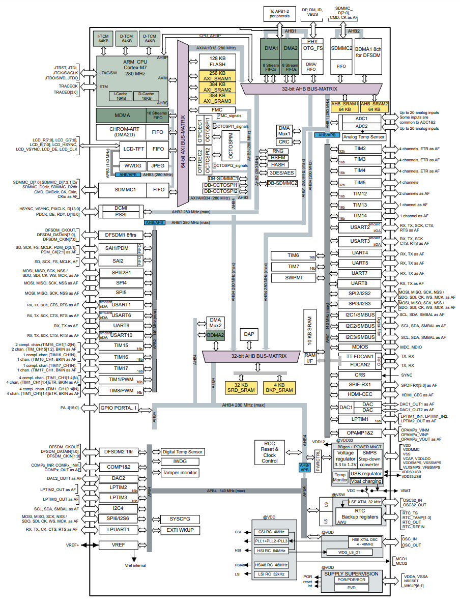
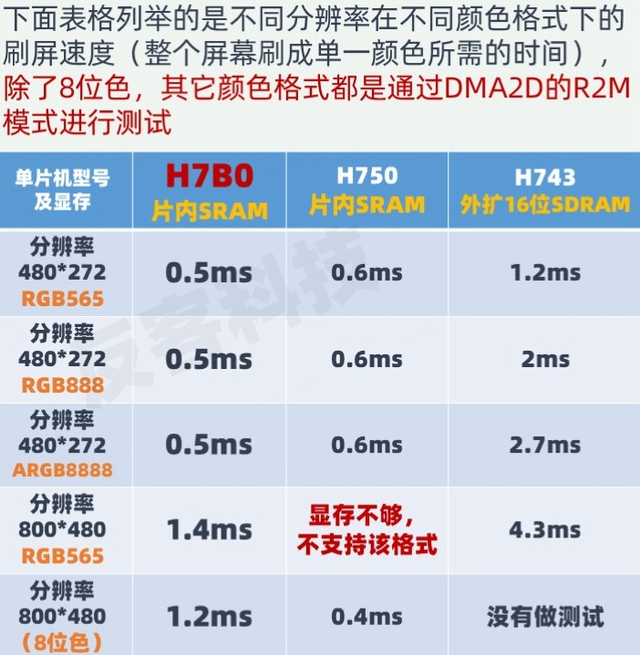

STM32H7B0¶
标签 : Cortex-M7 280MHz SMPS Chrom-ART STemWin JPEC HDMI-CEC
Xin简介¶

规格配置¶
基本参数¶
发布时间：2019年5月
工作温度：-40°C to +85°C/125°C
RAM容量：1.4 MB
Flash容量：128 KB (由多个8 KB扇区组成)
封装规格：64 to 176 Pin

Note
分散的1.4 MB SRAM组成包括 192 KB TCM RAM（64 KB ITCM RAM和128 KB DTCM RAM），1.18 MB 用户SRAM，备份域4 KB SRAM
特征参数¶
电源参数¶
供电电压：1.71 to 3.6 V
在内核运行模式（外设外设关）和SMPS情况下，典型功耗为120 µA/MHz
低功耗停止模式下的典型功耗电流为32 µA
低功耗待机模式下的典型功耗电流为2.2 µA
芯片架构¶
SMPS¶
用于降低电源电压还可用于为外部电路供电，以及特定应用情况下结合LDO共同使用
GFXMMU¶
图形性能¶
Note
LCD-TFT控制器接口支持双层图形，JPEG硬件加速器，可进行快速JPEG编码和解码
Xin选择¶
品牌对比¶
系列对比¶
STM32H7A3/7B3 MCU系列提供1到2 MB的Flash存储器，具有下列结构的1.4 MB SRAM：192 KB的TCM RAM（包括64 KB的ITCM RAM和128 KB的DTCM RAM，用于时间关键型程序或数据），1.18 MB的用户SRAM，以及用于在最低功耗模式下保存数据的备份域4 KB SRAM。另外，它提供64至225引脚的BGA和LQFP封装型号。
超值系列对比¶

Name |
RAM |
Cache |
GPU |
SPI |
USB |
Ethernet |
|
|---|---|---|---|---|---|---|---|
1177 |
564KB |
32+32 |
ART |
2 Octo |
100M |
||
1027 |
1 MB |
16+16 |
ART |
2 Quad |
100M |
||
599 |
1.4 MB |
16+16 |
ART/JPEG |
2 Octo |
No |
Hint
STM32H7B0 不具备以太网通信能力，单纯就性能而言在H7系列中没有优势，其特性更适用于低功耗交互类设备
版本对比¶

Xin应用¶
作为STM32H系列中的低功耗产品，片上集成1.4M SRAM可以满足大多数项目的资源依赖，减少外扩SDRAM也可以降低功耗。就官方提供的资源和推荐应用场景而言，应该是偏向仪器仪表显示。
开发板¶
FK7B0M1-VBT6¶

电容触控屏排线接口(800x480/480x272)，用于实践交互控制，板上资源较少，通过IO扩展外设
W25Q64(SPI)+W25Q64(OSPI)
25MHz HSE + 32.768KHz RTC
Type C USB
STM32H7B3I-DK¶

4.3” (480x272) TFT color LCD module including a capacitive touch panel with RGB interface
Wi‑Fi® module compliant with 802.11 b/g/n
USB OTG HS
Audio codec
512-Mbit Octo-SPI NOR Flash memory
128-Mbit SDRAM
2 user LEDs
User and Reset push-buttons
Fanout daughterboard
1x FDCAN
Camera (8 bit)
USB with Micro-AB
Stereo headset jack including analog microphone input
Audio jack for external speakers
microSD™ card
TAG-Connect 10-pin footprint
Arm® Cortex® 10-pin 1.27mm-pitch debug connector over STDC14 footprint
ARDUINO® Uno V3 expansion connector
STMod+ expansion connector
Audio daughterboard expansion connector
External I2C expansion connector
Flexible power-supply options: ST-LINK USB VBUS, USB OTG HS connector, or external sources
On-board STLINK-V3E debugger/programmer